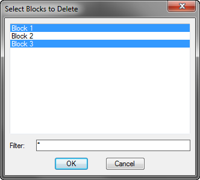

Delete Blocks
This page is delivered for consistency purposes only, as part of the LeeMac sample module of DynALisp, which shows how DynALisp turns existing AutoLISP programs into a module. The program and its description are the work of Lee Mac, who keeps all the credit for them. The original page, with the latest version, is on Lee Mac's website: https://lee-mac.com/deleteblocks.html
| Function Syntax | LM-DeleteBlocks – original syntax: delblocks (see aliases) |
| Current Version | 1.1 |
| Compatible with AutoCAD for Mac? | No |
| Compatible with AutoCAD LT? | Yes |
| Original Page | lee-mac.com/deleteblocks.html |
Program Description
This program enables the user to quickly remove multiple blocks from a drawing.
After invoking the program with the command delblocks at the AutoCAD command-line, the user is prompted to select a block to delete. At this prompt, the user may either select a block reference from the drawing, type N to choose a block by name, or exit the program by typing E or by dismissing the prompt.
By opting to choose a block by name, the user is presented with a simple dialog interface consisting of a list box and filter. The dialog provides a list of all standard & dynamic blocks defined in the active drawing, excluding anonymous blocks and xrefs. From this list, the user may select multiple blocks to be deleted from the active drawing.
Upon the user selecting a block from the drawing or selecting one or more block names from the dialog, the program will delete all primary & nested references of the blocks from all layouts of the active drawing, and will proceed to delete the respective block definitions, if possible.
The user will be informed at the command-line of those blocks successfully deleted by the program, and those blocks that the program was unable to remove.
The program also defines the function LM:deleteblocks so that users who wish to remove multiple blocks from several drawings in a batch processing operation may bypass the dialog and call this function with a VLA Document Object and a list of block names (case-insensitive) from a Script or another LISP application. This function is also compatible with ObjectDBX and hence may be utilised in conjunction with my ObjectDBX Wrapper function.
Preview

Bundled program notes
;;-------------------------=={ Delete Blocks }==------------------------;;
;; ;;
;; This program enables the user to quickly remove multiple blocks ;;
;; from a drawing. ;;
;; ;;
;; After invoking the program with the command 'delblocks' at the ;;
;; AutoCAD command-line, the user is prompted to select a block to ;;
;; delete. At this prompt, the user may either select a block ;;
;; reference from the drawing, type 'N' to choose a block by name, or ;;
;; exit the program by typing 'E' or by dismissing the prompt. ;;
;; ;;
;; By opting to choose a block by name, the user is presented with a ;;
;; simple dialog interface consisting of a list box and filter. The ;;
;; dialog provides a list of all standard & dynamic blocks defined ;;
;; in the active drawing, excluding anonymous blocks and xrefs. From ;;
;; this list, the user may select multiple blocks to be deleted from ;;
;; the active drawing. ;;
;; ;;
;; Upon the user selecting a block from the drawing or selecting one ;;
;; or more block names from the dialog, the program will delete all ;;
;; primary & nested references of the blocks from all layouts of the ;;
;; active drawing, and will proceed to delete the respective block ;;
;; definitions, if possible. ;;
;; ;;
;; The user will be informed at the command-line of those blocks ;;
;; successfully deleted by the program, and those blocks that the ;;
;; program was unable to remove. ;;
;; ;;
;; The program also defines the function 'LM:deleteblocks' so that ;;
;; users who wish to remove multiple blocks from several drawings ;;
;; in a batch processing operation may bypass the dialog and call ;;
;; this function with a VLA Document Object and a list of block names ;;
;; (case-insensitive) from a Script or another LISP application. ;;
;; This function is also compatible with ObjectDBX. ;;
;;----------------------------------------------------------------------;;
;; Author: Lee Mac, Copyright © 2012 - www.lee-mac.com ;;
;;----------------------------------------------------------------------;;
;; Version 1.0 - 2012-07-14 ;;
;; ;;
;; - First release. ;;
;;----------------------------------------------------------------------;;
;; Version 1.1 - 2016-11-05 ;;
;; ;;
;; - Program modified to prompt user for selection of a block to ;;
;; delete, with the option of displaying a list of all blocks ;;
;; defined in the drawing. ;;
;;----------------------------------------------------------------------;;
Command Names And Aliases
As in every DynALisp module, each program of this sample module has one main command, named LM-*, and the original command names of Lee Mac's page are kept as its aliases: they run the same command, and can be added, renamed or removed in Dyl-Suite (saved in Resources\Aliases.csv).
| Command | Aliases | Name |
|---|---|---|
| LM-DeleteBlocks | DELBLOCKS | Delete Blocks |